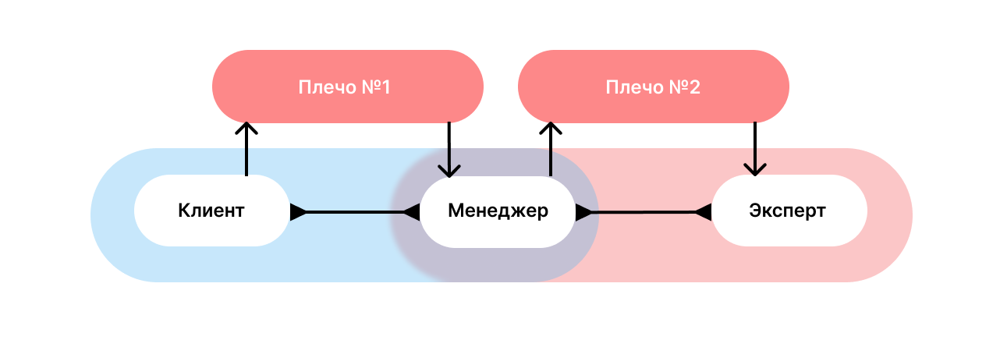

Как работает интерграция с телефонией¶
API Контур.CRM позволяет подключить прямую интеграцию с телефонией. В интеграции реализуются сценарии использования: входящий и исходящий вызов, пауза, перевод, и другие. Система видит звонок набором связанных между собой плеч, где каждое плечо это разговор между двумя конкретными участниками. Звонки бывают трех типов:
Входящий — клиент звонит на внешний номер;
Исходящий — пользователь звонит на внешний номер;
Внутренний — пользователь звонит пользователю на внутренний номер.
Пример звонка¶
Иван делает звонок по внешнему номеру. Телефония переводит звонок клиента на менеджера Машу. Маша разговаривает с Иваном, потом делает консультационный звонок по внутреннему номеру эксперту Диме. После решения вопроса Маша возвращается к Ивану и заканчивает с ним разговор. В таком звонке два плеча: разговор клиента с менеджером и разговор менеджера с экспертом.
Создание интеграции¶
Интеграции бывают двух типов:
Приватная интеграция — создается администратором и доступна только сотрудникам приглашенным в это пространство.
Публичная интеграция — создается администратором и доступна пользователям всех пространств. Если интеграция установлена, то напишите на почту, чтобы сделать ее публичной: crm-support@kontur.ru. После включения сторонние организации добавят ее в разделе «Настройки» —> «Интеграции» —> «Добавить интеграцию».
Особенности интеграции¶
Подключить телефонию можно без создания собственной интеграции, если она добавлена в магазин интеграций. Если такой вариант не подходит, то создайте публичную или приватную интеграцию, в зависимости от нужд организации.
Чтобы подключить телефонию в Контур.CRM, установите интеграцию в пространстве. Интеграции выдается API-ключ, с помощью которого вы сможете авторизовать вызовы в API. В пространстве можно подключить неограниченное количество интеграций.
При создании интеграции, вам необходимо реализовать следующую функциональность:
Регистрацию завершенных звонков и чтение истории из телефонии. Завершенный звонок это состоявшийся или пропущенный вызов.
Сообщение о событиях: поступление вызова, подняли трубку, положили трубку, поставили на удержание, и другие. При вызове Контур.CRM отобразит в интерфейсе пространства кнопки «Принять звонок» и «Положить трубку».
HTTP-сервер для обработки системных вызовов.
Системный вызов CALL — интеграция начинает новый звонок. Контур.CRM выполнит его, когда пользователь нажимает кнопку «Позвонить» в интерфейсе.
Системный вызов HANGUP — интеграция завершает плечо звонка. Вызов делает Контур.CRM, когда пользователь нажимает на кнопку «Положить трубку» в интерфейсе.
Переадресацию звонка на ответственного пользователя, при необходимости в таком сценарии. Пользователь может создать карточку «Cделки» и указать в ней номер клиента. При поступлении входящего вызова звонок будет адресован ответственному сотруднику в активной сделке.
Чтобы избежать дублирования звонков в системе, интеграция должна сопоставлять звонок с помощью внутреннего идентификатора телефонии. Если звонки поступают по внутренним номерам, то в плечах модели звонка будут записаны идентификаторы пользователей. Интеграция должна обеспечить сохранение соответствия «Пользователь Контур.CRM» <—> «Внутренний номер в телефонии». Записи разговора могут храниться в плечах звонка. Для сохранения записи нужно загрузить ее во временное хранилище с помощью API Files
Алгоритм работы с методами¶
Рассмотрим сценарии входящих и исходящих звонков API Контур.CRM. Порядок методов зависит от интеграции и особенностей от телефонии.
Пример входящего звонка
Если в интеграции включена переадресация звонка, то при активной карточке сделки вызов будет адресован ответственному сотруднику GET TelephonyCallRedirect
Интеграция сообщает о начале звонка POST TelephonyCallStarted и событии звонка POST TelephonyCallEvent.
При неудачной попытке позвонить, интеграция отправляет сообщение POST TelephonyCallFailed.
Пользователь решает завершить звонок и нажимает в интерфейсе «Положить трубку». Контур.CRM отправит запрос на HTTP-сервер указанный в интеграции POST CommunicationsHangup.
Интеграция сообщает о завершении звонка между участниками POST TelephonyCallFinished.
Интеграция регистрирует завершенный звонок POST TelephonyRegisterCall и загружает файл во временное хранилище API Files POST UploadFile.
Интеграция сообщает о появлении записи разговора POST TelephonyCallRecording
Запись звонка доступна для прослушивания в Контур.CRM.
Пример исходящего звонка
Пользователь нажимает «Позвонить» в интерфейсе. Контур.CRM отправит запрос на HTTP-сервер указанный в интеграции POST СommunicationsСall.
Интеграция сообщает о начале звонка POST TelephonyCallStarted и событии звонка POST TelephonyCallEvent.
При неудачной попытке позвонить, интеграция отправляет сообщение POST TelephonyCallFailed.
Пользователь решает завершить звонок и нажимает в интерфейсе «Положить трубку». Контур.CRM отправит запрос на HTTP-сервер указанный в интеграции POST CommunicationsHangup.
Интеграция сообщает о завершении звонка между участниками POST TelephonyCallFinished.
Интеграция регистрирует завершенный звонок POST TelephonyRegisterCall и загружает файл во временное хранилище API Files POST UploadFile.
Интеграция сообщает о появлении записи разговора POST TelephonyCallRecording
Запись звонка доступна для прослушивания в Контур.CRM.